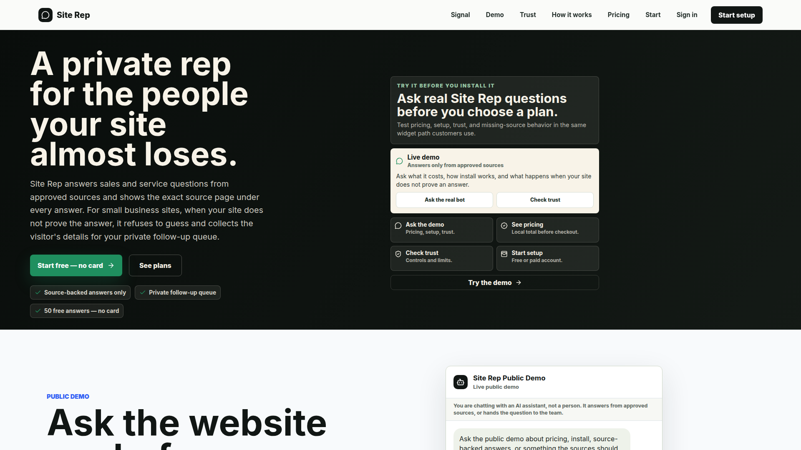
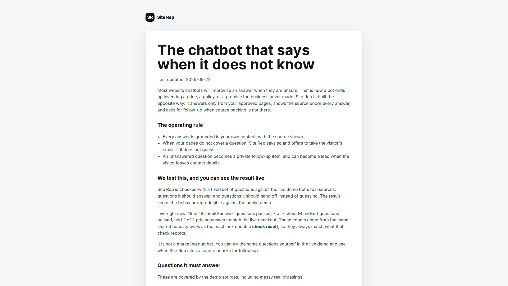
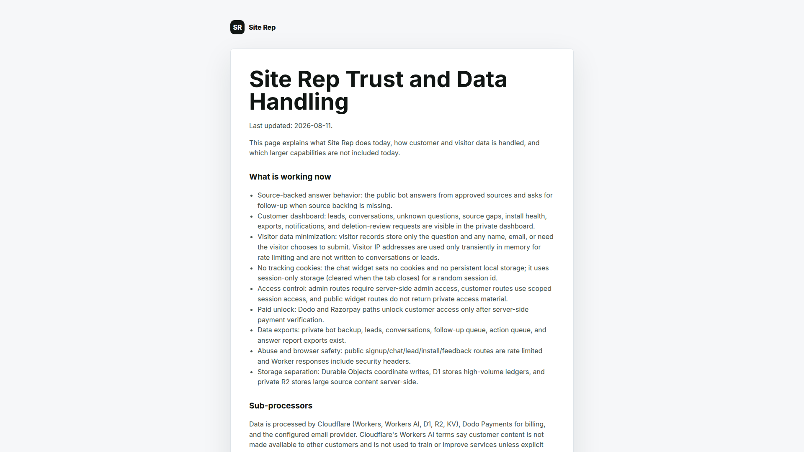

For small business websites
Answers from your approved pages.
Site Rep cites the source under every answer, and captures leads.
The problem
A private rep for the people your site almost loses.
It refuses to guess, and collects the visitor's details for your private follow-up queue.

The honesty page
It says when it does not know.
When your pages do not cover a question, Site Rep says so and asks for follow-up.

Trust and data handling
What it does today, stated plainly.
Your next step
siterep.net
Start free — no card